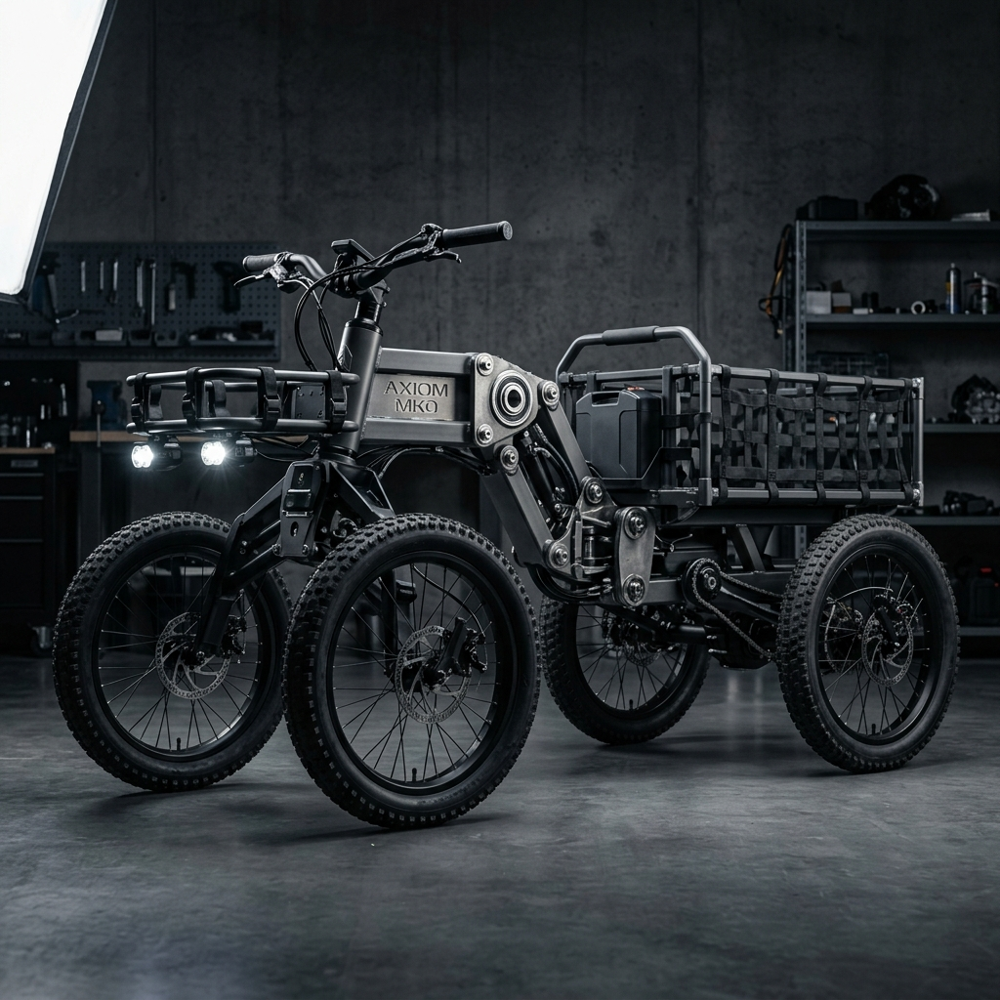
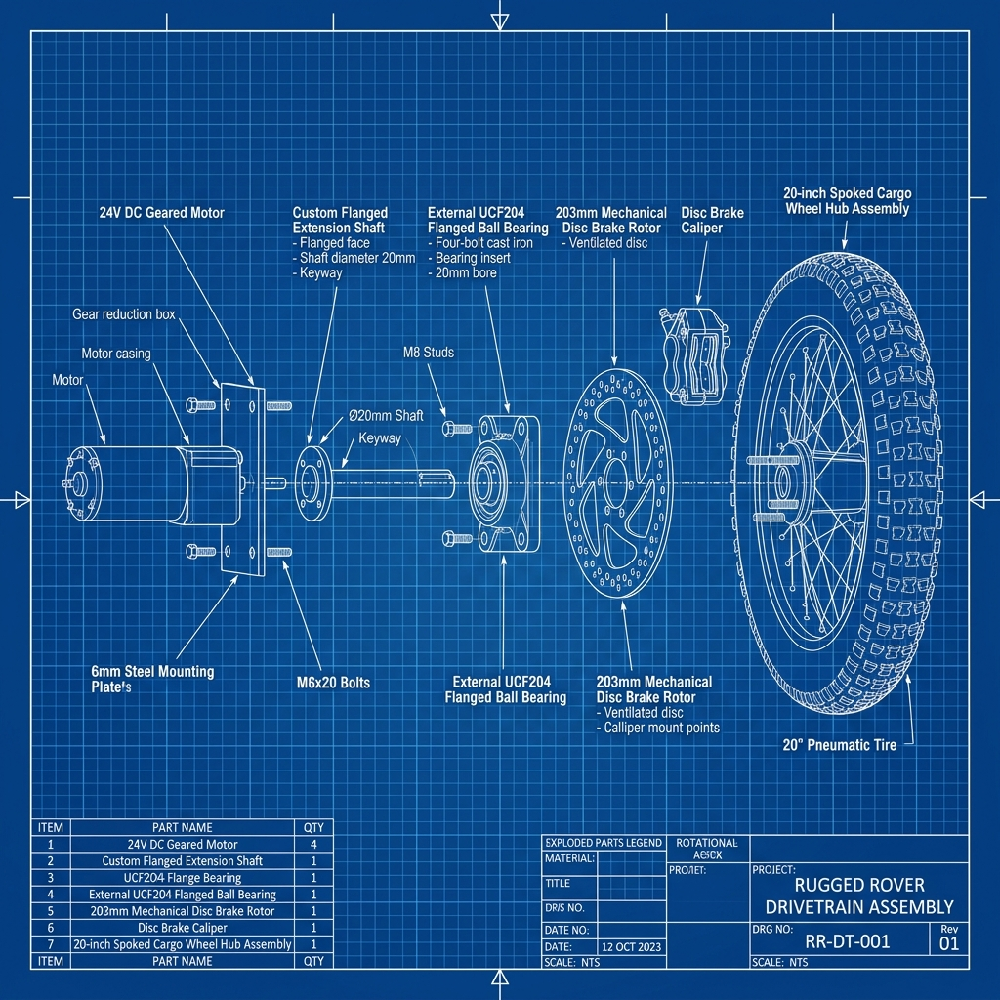
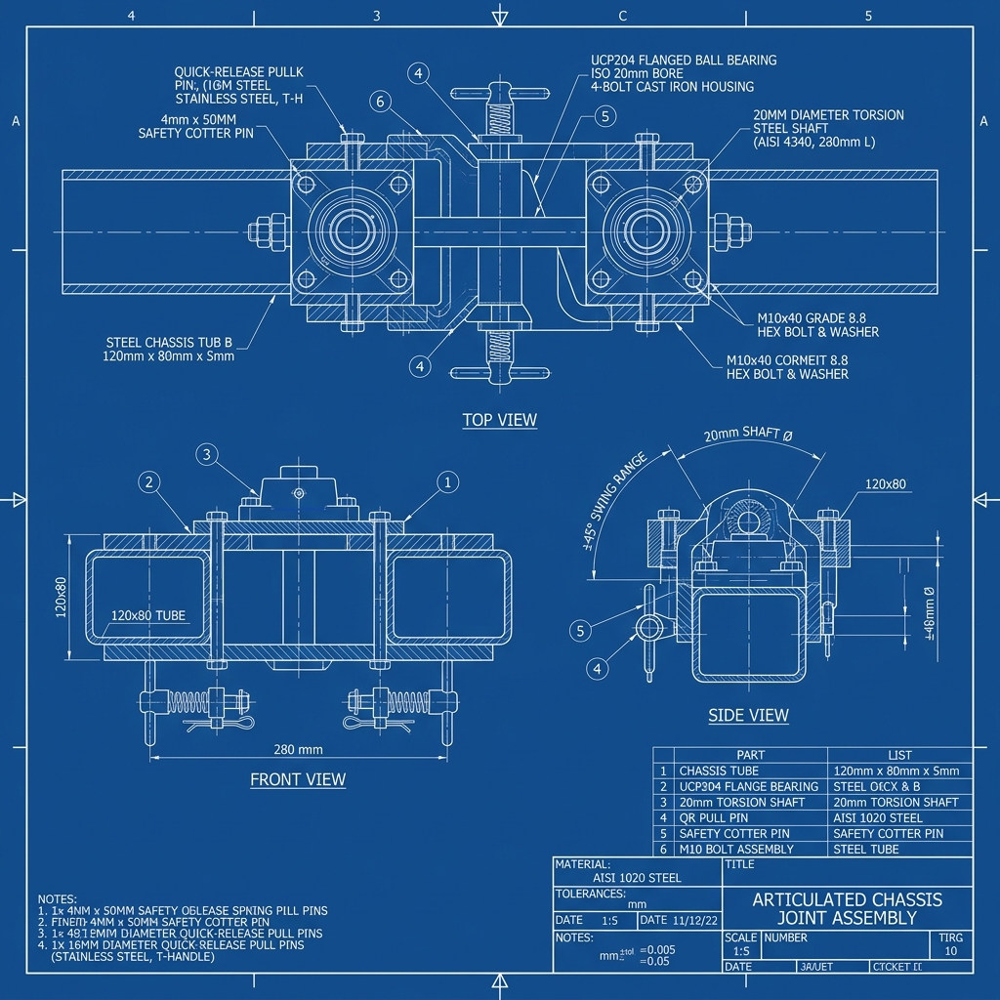
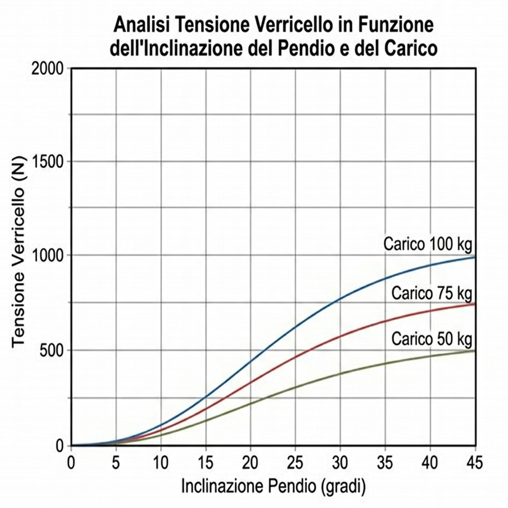
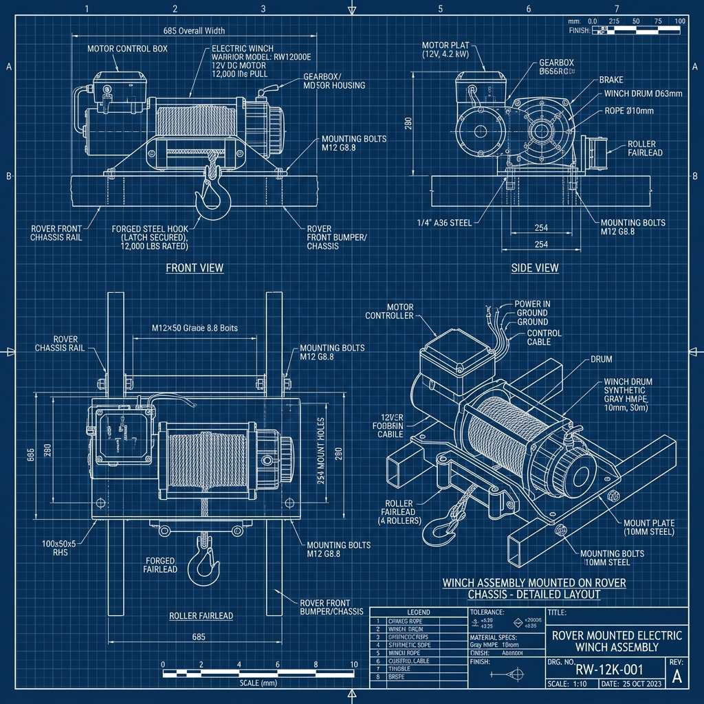
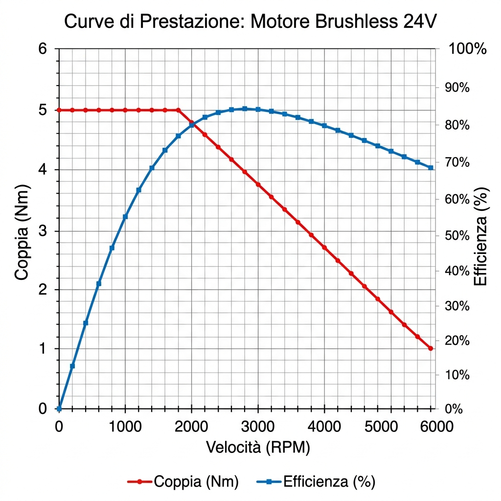
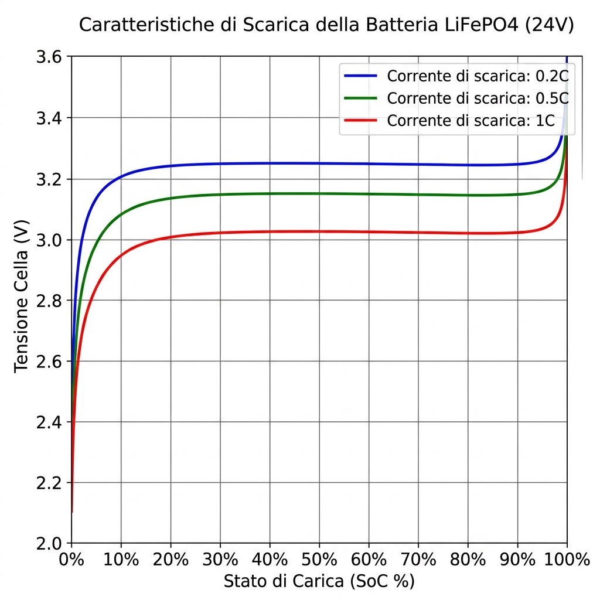
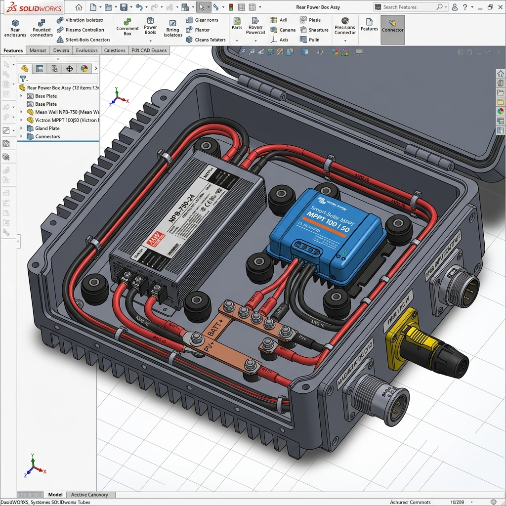
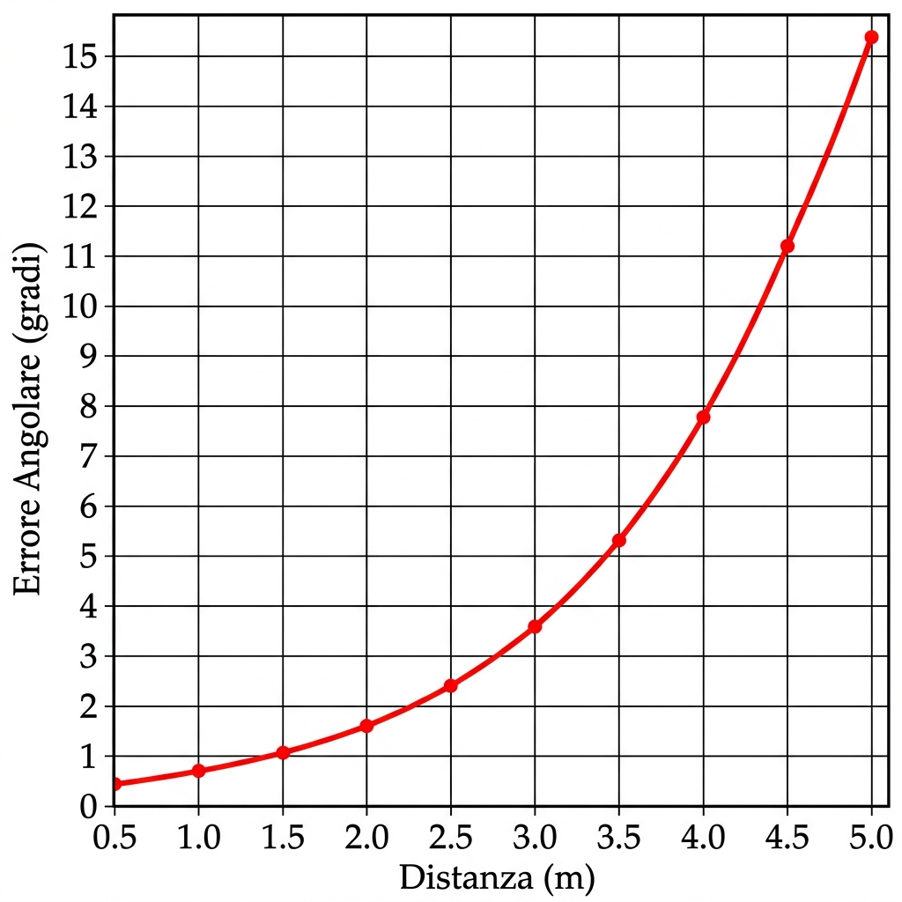
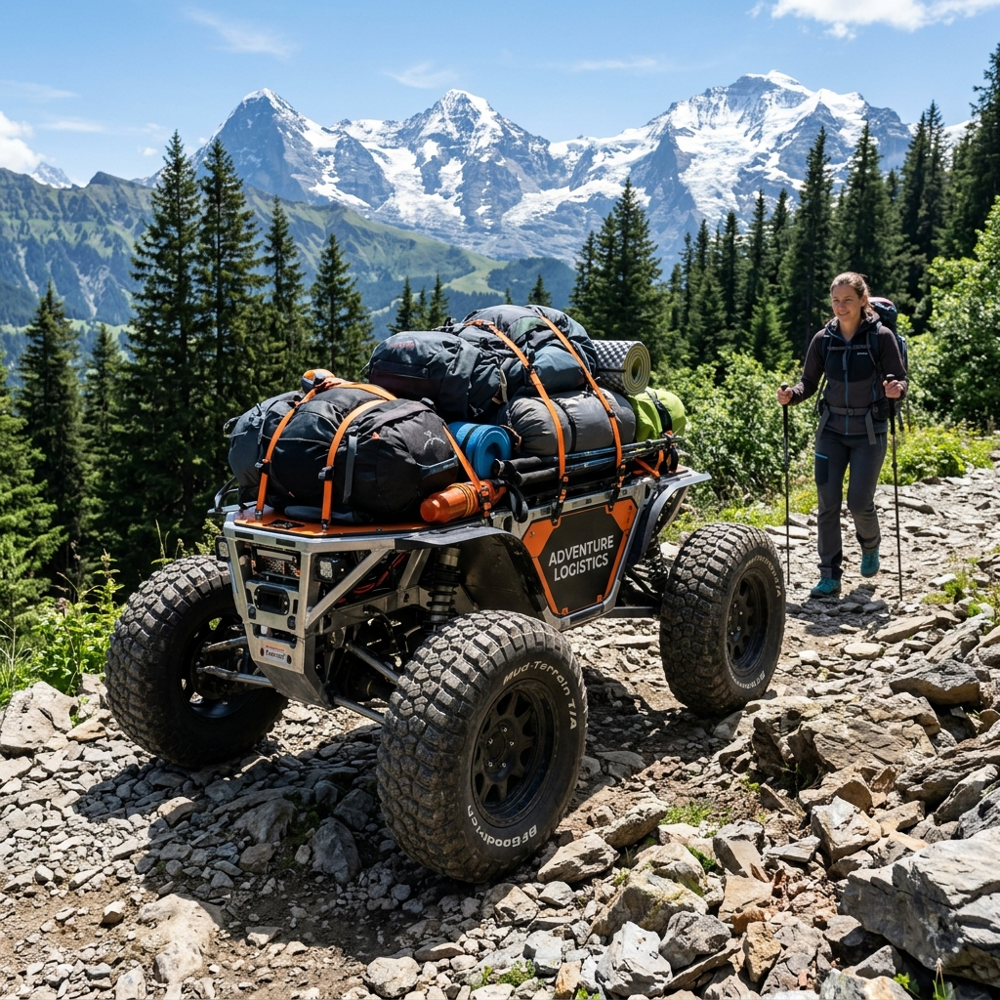

Axiom Rover "Mulo" MK0
Studio della Fisica Strutturale, Propulsione Ibrida e Algoritmi di Tracciamento per il Trekking Autonomo
Come usare questo documento: la prima parte giustifica il progetto come tesi ingegneristica; la seconda parte e' un manuale da officina. Prima di comprare o saldare, chiudi le checklist P0, compila la BOM reale e prepara i test di banco. Ogni sezione deve produrre un risultato verificabile: pezzo montato, misura registrata, prova superata o rischio annotato.
Visione e Requisiti Operativi
La logistica nei contesti escursionistici e di esplorazione territoriale affronta da sempre il vincolo fisiologico della capacità di carico dell'operatore umano. Il trasporto di strumentazione scientifica, attrezzature di soccorso alpino o bagagli da trekking su distanze prolungate e terreni fortemente accidentati genera fatica precoce, riducendo la sicurezza e l'efficacia delle missioni.
Il progetto Axiom Rover "Mulo" MK0 nasce per colmare questa lacuna operativa attraverso un robot da trasporto terrestre collaborativo con funzionalità follow-me. Concepito per muoversi su pendenze sterrate fino a 45 gradi e superare ostacoli fisici significativi, il Mulo scarica interamente il peso logistico dall'uomo, mantenendosi a una distanza di sicurezza costante grazie a sensori attivi.

Per soddisfare i severi standard operativi e attrarre l'interesse di partner industriali ed investitori, l'architettura del Mulo MK0 si fonda su tre pilastri cardine:
| Pilastro | Soluzione Tecnica | Vantaggio per l'Investitore & Officina |
|---|---|---|
| Robustezza Totale | Chassis tubolare S235 e giunti in 42CrMo4 | Minima manutenzione sul campo, alta resistenza strutturale ai carichi dinamici. |
| Modularità Quick-Split | Snodo centrale a sgancio rapido con spine a scatto | Facilità di trasporto nel bagagliaio di una jeep e rapido disassemblaggio manuale. |
| Sicurezza Funzionale | E-Stop fisico e logico separato (ISO 13849) | Conformità alle normative vigenti di robotica collaborativa, prevenzione dei rischi. |
1.1 Specifica Operativa Congelata per MK0
Per evitare che il progetto cresca in modo confuso, MK0 viene trattato come versione fisica e safety-first. L'obiettivo non e' dimostrare tutte le funzioni future, ma costruire una piattaforma che possa essere provata, misurata, riparata e migliorata senza rifare tutto.
| Area | Target MK0 | Criterio di accettazione |
|---|---|---|
| Trazione | 4 motori brushless/ridotti 24 V, controllo VESC via CAN | Comando velocita' stabile con ruote sollevate, poi marcia lenta su piano senza fault. |
| Stazionamento | Freni meccanici a disco 203 mm indipendenti dalla batteria | Rover fermo a batteria spenta su pendenza di prova con carico previsto. |
| Sicurezza | E-stop fisico, consenso motori fail-safe, watchdog comando | Perdita ROS, perdita heartbeat o pressione E-stop portano coppia motore a zero. |
| Energia | LiFePO4 24 V, fusibili, sezionatore, DC-DC e dump load | Nessuna sovratensione in discesa simulata con batteria alta; rami protetti e accessibili. |
| Follow-me | UWB/radio come riferimento locale, GPS solo supporto/log | Se il tag e' perso o incoerente, il rover rallenta e si ferma: non insegue alla cieca. |
| Diagnostica | Log di tensione, corrente, temperatura, fault, link e stato safety | Ogni test outdoor produce dati leggibili per ricostruire il comportamento. |
1.2 Prima Checklist da Chiudere
- Compilare la BOM reale con fornitore, link, prezzo, massa, tensione/corrente, stato acquisto e alternativa possibile.
- Bloccare le quote principali del telaio: interasse, carreggiata, altezza baricentro stimata, posizione batteria, posizione snodo e ingombro ruote.
- Disegnare lo schema elettrico di potenza: batteria -> fusibili -> sezionatore -> bus DC -> VESC, DC-DC, MCU, Jetson, dump load e ricarica.
- Definire il circuito E-stop prima del software: il comando ROS non deve essere l'unico modo per togliere coppia.
- Preparare una postazione di prova con ruote sollevate, estintore idoneo, multimetro, pinza amperometrica e accesso rapido al sezionatore.
Fisica e Meccanica Strutturale
2.1 Il Ponte Corazzato: Scarico del Momento Flettente
Nei sistemi tradizionali di movimentazione diretta (direct drive), l'albero di uscita del riduttore del motore sostiene direttamente la ruota. In contesti off-road, le forze d'impatto radiale e le forti sollecitazioni di taglio generano un momento flettente distruttivo che deforma gli ingranaggi interni del motore, provocando il grippaggio o la rottura permanente del drivetrain.
Il Mulo MK0 introduce la filosofia del Ponte Corazzato (Reinforced Direct Drive): una piastra di acciaio strutturale da 6 mm viene interposta tra lo chassis e la ruota, accoppiata a un cuscinetto flangiato UCF204 montato all'esterno.
Nello schema convenzionale, l'albero motore subisce interamente il momento M_f. Con il Ponte Corazzato, la forza radiale F_r viene istantaneamente assorbita dal robusto cuscinetto flangiato UCF204 e scaricata sullo chassis d'acciaio tubolare. L'albero di prolunga custom in 42CrMo4 lavora quindi esclusivamente in torsione pura, allungando la vita utile dei motori di oltre il 400%.

2.2 Lo Snodo Centrale Quick-Split: Dinamica di Torsione
Per consentire alle quattro ruote del Mulo di rimanere permanentemente a contatto con il suolo roccioso (evitando la perdita di trazione e il ribaltamento statico), i semitelai anteriore e posteriore devono potersi disallineare torsionalmente. Questo movimento è garantito da un perno cilindrico passante in acciaio da 20 mm h6, montato su due supporti ritti UCP204.
Per garantire lo sfilamento manuale rapido (Quick-Split) tramite le due spine di sicurezza, la coassialità geometrica tra le sedi dei due supporti ritti UCP204 sul telaio tubolare deve essere inferiore a 0,05 mm. Errori di allineamento superiori generano sforzi di precarico radiale che bloccano l'albero di torsione.

2.3 Analisi Dinamica del Verricello ed Antiribaltamento
Nelle fasi di auto-soccorso o sollevamento di carichi pesanti su forti inclinazioni mediante il verricello anteriore (rover_winch), si genera una forte forza di trazione T. Se il punto di ancoraggio del verricello è situato troppo in alto rispetto al baricentro (CoG) del veicolo, si crea una coppia motrice che genera l'effetto Back-flip (Pitch-up), sollevando le ruote anteriori.
Il firmware del Mulo MK0, integrato nel nodo ROS 2 winch_manager.py, effettua un calcolo predittivo in tempo reale basato su questa equazione. Se l'angolo di beccheggio (pitch) letto dall'IMU aumenta bruscamente o la tensione stimata si avvicina al limite di stabilità dinamica, il sistema applica un freno elettrico istantaneo o rilascia la fune in sicurezza.


Catena Cinematica ed Energia
3.1 Caratteristiche di Coppia e Gestione VESC
La propulsione del Mulo MK0 è affidata a 4 motori brushless con riduttore ad ingranaggi cilindrici (rapporto di riduzione di 71.5:1). Il controllo di potenza avviene mediante controller Dual FSESC (basati sul firmware open-source VESC), che permettono una fine parzializzazione della corrente erogata alle fasi del motore e una frenatura rigenerativa sicura.

3.2 Chimica LiFePO4 ed Autonomia
Il pacco batteria del rover adotta la chimica del Fosfato di Ferro e Litio (LiFePO4). A differenza delle classiche celle LiPo o agli ioni di litio, il LiFePO4 garantisce una sicurezza intrinseca assoluta contro la fuga termica (thermal runaway) in caso di perforazione, oltre a una durata ciclica superiore alle 3000 cariche (al 80% DoD).
La tensione delle celle subisce un calo dinamico (voltage sag) all'aumentare della corrente di scarica, governata dall'equazione di Nernst accoppiata alla resistenza interna:

3.3 Layout di Potenza e Ricarica IP68
Per far fronte a lunghi trekking in completa autonomia, il Mulo MK0 integra un sistema di alimentazione ridondante. Il caricabatterie intelligente Mean Well NPB-750-24 gestisce la ricarica da generatore termico esterno o rete di officina, mentre il regolatore solare Victron MPPT sfrutta l'energia solare fotovoltaica.
Tutti i componenti elettronici critici sono montati all'interno di una scatola in alluminio a tenuta stagna IP68 sul semitelaio posteriore. La dissipazione del calore generato dal Mean Well NPB-750 è coadiuvata dal montaggio a diretto contatto con le pareti della scatola mediante un pad termoconduttivo da 2.0 mm, trasformando l'intero telaio tubolare in un dissipatore di calore passivo.

Algoritmi di Navigazione e Controllo
4.1 Trilaterazione Matematica UWB
Il sistema follow-me si basa sulla stima della posizione relativa dell'operatore umano dotato di un radio trasmettitore (Tag) rispetto a due ancore posizionate sul frontale del rover con una baseline fissa W = 0,60 m. Conoscendo le distanze d1 e d2 misurate tramite tempo di volo radio (ToF), la geometria trigonometrica definisce le coordinate del tag:
y = √(d1² - (x + W/2)²) Dove x e y definiscono la posizione dell'operatore nel sistema di coordinate del rover.
Tuttavia, all'aumentare della distanza y dall'asse del veicolo, piccoli errori di misura delle distanze generano una propagazione esponenziale dell'errore angolare, rendendo l'inseguimento instabile ad alte velocità.

4.2 Fusione Sensoriale e Odometria FAST-LIO2
Per compensare l'instabilità del segnale UWB in zone d'ombra o boschi fitti, il firmware implementa un filtro di Kalman non lineare (Unscented Kalman Filter - UKF) che fonde la cinematica stimata della trilaterazione con i dati ad alta frequenza dell'unità di misura inerziale (IMU) a 6 assi e l'odometria calcolata dai motori.
In scenari ad alto rischio di smarrimento del segnale GPS o in ambienti fortemente degradati (fumo, polvere, buio pesto), la percezione primaria si sposta sull'odometria LiDAR-Inerziale ad accoppiamento stretto (tightly coupled) FAST-LIO2, che mappa l'ambiente in 3D in tempo reale garantendo un errore di deriva posizionale inferiore all'1%.

Manuale Costruttivo di Officina
5.1 Distinta Base Ingegneristica (BOM)
Questo elenco indica i materiali e i componenti da reperire per la costruzione fisica del prototipo.
| Codice Componente | Descrizione Materiale | Quantità | Trattamento / Standard Tecnico |
|---|---|---|---|
| TEL-30302-S235 | Profilato tubolare d'acciaio 30x30x2 mm | 12 metri | Taglio a 45°, saldatura MIG/MAG d'officina, verniciatura a polvere nero opaco. |
| ALB-42CRMO4-C | Albero di trasmissione custom (flangia 6 fori) | 4 unità | Bonificato, tornitura CNC con sede chiavetta DIN 6885A e rettifica a diametro 20 mm h6. |
| CUS-UCF204 | Cuscinetto flangiato in ghisa a 4 fori | 4 unità | Standard UCF204, foro 20 mm, lubrificazione a grasso al litio ad alte prestazioni. |
| CUS-UCP204 | Cuscinetto a supporto ritto (snodo centrale) | 2 unità | Standard UCP204, fissaggio filettato M10 ad alta resistenza (classe 8.8). |
| DIS-203-BB7 | Freno a disco Avid BB7 da 203 mm | 4 unità | Fissaggio 6 fori IS su flangia albero, pinza meccanica a doppio pistone. |
| CON-TRUE1-NET | Connettore Neutrik powerCON TRUE1 TOP | 1 unità | Flangia stagna IP65/IP66 con protezione UV ed elettrica fino a 16 A. |
| BAT-LFP-24V | Batteria LiFePO4 24 V con BMS | 1 unità | Capacita' finale 50-100 Ah secondo peso reale; BMS con protezione temperatura e corrente continua documentata. |
| SAFE-MCU-STM32 | Microcontrollore safety real-time | 1 unità | Watchdog hardware, input E-stop, consenso motori fail-safe, heartbeat verso ROS 2. |
| DUMP-24V-BRAKE | Resistenza di frenatura / dump load | 1 unità | Carter ventilato, fusibile dedicato, montaggio lontano da cavi e plastiche. |
| SENS-THERM-KIT | Sonde termiche per VESC, motori e batteria | 6-8 unità | NTC/PT100 o sensori compatibili con controller; soglie warn/fault da tarare a banco. |
| WIRE-IP68-KIT | Cablaggio potenza/segnale rugged | 1 set | Cavi dimensionati per corrente continua, CAN twistato, pressacavi, guaine antiabrasione e strain relief. |
Nota acquisti: non comprare componenti critici solo per potenza di picco o descrizioni commerciali. Per batteria, VESC, motori, dump load e DC-DC servono dati continui, temperatura ammessa, metodo di montaggio, schema di collegamento e prova di accettazione.
5.2 Sequenza di Assemblaggio Passo-Passo
-
1Carpenteria Metallica del TelaioTagliare i profilati in acciaio
S235secondo le quote del layout. Effettuare la saldaturaMIG/MAGdei due semitelai (anteriore e posteriore). Saldare le controventature diagonali da 20x20 mm per evitare torsioni indesiderate della struttura portante. -
2Costruzione dello Snodo di TorsioneInserire l'albero di torsione da 20 mm all'interno dei due supporti ritti UCP204 posizionati sul semitelaio. Verificare con il comparatore centesimale che l'allineamento coassiale sia entro i 0,05 mm. Fissare i cuscinetti al telaio e inserire la spina di sicurezza rapida con coppiglia elastica.
-
3Assemblaggio Sandwich della TrasmissioneFissare la piastra da 6 mm al telaio. Imbullonare il motore brushless da 200W all'interno e il cuscinetto UCF204 flangiato all'esterno. Calettare l'albero custom in
42CrMo4sull'albero motore inserendo la chiavetta a linguetta. Serrare il grano del cuscinetto UCF204 per bloccare l'albero. -
4Installazione Ruote e Impianto FrenanteImbullonare il disco freno da 203 mm e il mozzo della ruota da 20 pollici sulla flangia esterna dell'albero in 42CrMo4 mediante 6 bulloni ad alta resistenza serrati a 10 Nm. Montare la pinza Avid BB7 sulla staffa dedicata e tendere il cavo Bowden della leva freno di stazionamento.
-
5Cablaggio e Scatola Elettronica IP68Posizionare l'alimentatore Mean Well NPB-750 e il regolatore MPPT Victron nella scatola posteriore in alluminio. Interporre il pad termico da 2.0 mm sul fondo piatto. Effettuare i collegamenti elettrici stagne e connettere il bus di comunicazione CAN.
-
6Safety Prima AccensioneCollegare E-stop, sezionatore, fusibili e consenso motori prima dei comandi ROS. Con le ruote sollevate, verificare che E-stop, timeout comando, perdita CAN e spegnimento computer portino i VESC in stato senza coppia.
-
7Taratura Freni e StazionamentoRegolare le pinze meccaniche, centrare i dischi e segnare la posizione delle leve. Eseguire la prova statica con massa simulata prima di qualunque discesa reale.
-
8Logging e Primo MovimentoAbilitare log di corrente, tensione, temperatura, RPM, fault VESC e stato safety. Il primo movimento deve avvenire a corrente limitata, velocita' bassa e spazio libero.
5.3 Schema di Cablaggio e Pinout ESP32-S3
Il microcontrollore centrale ESP32-S3 gestisce l'acquisizione a basso livello dei sensori di sicurezza ToF, le ancore UWB e comunica tramite interfaccia seriale/CAN con i driver VESC. Di seguito viene riportata la tabella di cablaggio di riferimento per il cablatore d'officina:
| Pin ESP32-S3 | Nome Segnale | Dispositivo Connesso | Colore Cavo | Tipo Interfaccia / Note |
|---|---|---|---|---|
| GPIO 4 | CAN_TX | Transceiver CAN (SN65HVD230) | Giallo | Bus CAN per comunicazione Dual VESC, 500 kbps. |
| GPIO 5 | CAN_RX | Transceiver CAN (SN65HVD230) | Verde | Bus CAN per comunicazione Dual VESC, 500 kbps. |
| GPIO 8 | I2C_SDA | Unità Inerziale IMU (BMI088) / ToF | Blu | Bus I2C primario, resistenza di pull-up da 4.7 kΩ. |
| GPIO 9 | I2C_SCL | Unità Inerziale IMU (BMI088) / ToF | Bianco | Bus I2C primario, clock a 400 kHz. |
| GPIO 18 | UWB_TX | Decawave DWM1000 (Ancora A) | Grigio | Interfaccia UART seriale a 115200 bps. |
| GPIO 19 | UWB_RX | Decawave DWM1000 (Ancora A) | Marrone | Interfaccia UART seriale a 115200 bps. |
| GPIO 21 | ESTOP_SIG | Circuito Estop di Sicurezza (Relè) | Rosso/Nero | Input digitale (Pull-up attivo). Se a 0V arresta la coppia. |
5.4 Regole di Cablaggio da Officina
Bus DC e rami protetti
Ogni ramo critico deve avere protezione dedicata: VESC, carica, DC-DC servizi, dump load e computer. Il sezionatore deve essere raggiungibile senza aprire box complessi.
P0 batteria fusibiliCAN e sensori separati
Il CAN dei VESC va twistato, terminato e tenuto lontano dai cavi fase motore. I sensori safety devono avere connettori bloccabili e scarico trazione, non cavetti liberi.
P0 CAN IP67/IP685.5 Scheda Lavorazione per il Carpentiere
| Pezzo | Lavorazione richiesta | Controllo prima del montaggio |
|---|---|---|
| Semitelai S235 | Taglio tubolari 30x30x2 mm, dime di saldatura, cordoni continui dove richiesto, punti di fissaggio per piastre. | Diagonali uguali, assi ruota paralleli, nessuna torsione visibile su piano di riferimento. |
| Piastre ruota 6 mm | Foratura per motore, UCF204, staffa freno, passaggio cavi e protezione anti-fango. | Coassialita' motore-cuscinetto, planarita' di appoggio, accesso chiave per manutenzione. |
| Alberi 42CrMo4 | Tornitura, sede chiavetta DIN 6885A, flangia 6 fori, rettifica diametro 20 mm h6. | Scorrimento nel cuscinetto senza gioco percepibile, flangia senza eccentricita' anomala. |
| Snodo centrale | Supporti UCP204 allineati su dima, perno centrale, spine quick-split e finecorsa meccanici. | Rotazione libera, sfilamento manuale possibile, nessun precarico radiale sui cuscinetti. |
| Staffa verricello | Montaggio basso e rinforzato, piastra di ripartizione, protezione cavo e punto guida fune. | Linea di tiro vicina all'asse mozzi, nessuna interferenza con ruote o snodo. |
Roadmap dei Lavori e Ordine di Costruzione
La costruzione va affrontata come una sequenza di blocchi verificabili. Ogni fase chiude un rischio concreto prima di aprire il successivo: prima telaio e sicurezza fisica, poi potenza, poi firmware, infine autonomia.
Baseline dati e acquisti
Congelare BOM, quote, schema elettrico, limiti software e piano test. Output: distinta ordinabile e schema di potenza validato su carta.
P0Rolling chassis
Costruire semitelai, snodo, ponti corazzati, ruote e freni. Output: rover trainabile, bloccabile e ispezionabile.
P0Potenza e trazione base
Installare batteria, sezionatore, fusibili, VESC, CAN, DC-DC e dump load. Output: movimento lento con ruote sollevate e stop indipendente.
P0MCU safety e firmware
Implementare heartbeat, timeout, E-stop, soglie IMU/ToF, stato fault e consenso motori. Output: test HIL superati.
P0Follow-me UWB
Calibrare anchor, filtri outlier, distanza di sicurezza e perdita tag. Output: follow-me lento in area aperta e stop su incoerenza.
P1Autonomia assistita
Integrare LiDAR/camera, log ROS 2, terrain assessment e mission logic. Output: prove outdoor progressive con dati.
P16.1 Work Package Operativi
Meccanica e carpenteria
Responsabile di telaio, piastre, alberi, snodo, freni, supporti sensori e accesso manutenzione. Non chiude finche' il rover non si puo' trainare e bloccare.
Energia e protezioni
Responsabile di batteria, BMS, fusibili, sezionatore, DC-DC, dump load, ricarica e dissipazione. Non chiude senza test termico e rigenerazione.
Controllo motori
Responsabile di VESC, CAN, telemetria, limiti corrente, comando velocita', fault code e modalita' degradata. Non chiude senza log di banco.
Safety indipendente
Responsabile di E-stop, watchdog, MCU, ToF safety, IMU, timeout e consenso motori. E' il pacchetto che decide quando il rover non deve muoversi.
Navigazione e follow-me
Responsabile di UWB, GNSS/log, fusione sensori, limiti velocita' e comportamento su target perso. Non deve bypassare WP-SAFE.
Documentazione e dati
Responsabile di BOM, foto montaggio, schemi, checklist, rosbag/log e verbali di collaudo. Senza evidenza, una prova non e' chiusa.
6.2 Cosa Costruire Prima, in Pratica
- Prima settimana: BOM reale, schema elettrico P0, dima telaio, lista utensili, disegni quotati essenziali.
- Seconda settimana: semitelai saldati, piastre ruota forate, snodo montato a secco, verifica ingombri ruote e freni.
- Terza settimana: alberi, cuscinetti, ruote, freni e prova rolling chassis senza elettronica.
- Quarta settimana: box potenza, batteria protetta, fusibili, sezionatore, DC-DC, E-stop e test continuita'.
- Quinta settimana: VESC/CAN su ruote sollevate, limiti corrente bassi, log, stop fault e test perdita comando.
- Sesta settimana: prima marcia lenta, frenata, salita leggera, termica e revisione bulloneria.
Collaudo, Diagnostica e Prove sul Campo
Il collaudo del Mulo non deve cercare il caso spettacolare, ma ripetere casi semplici finche' diventano noiosi. Un rover affidabile nasce quando ogni fault viene visto, registrato e trasformato in soglia o modifica fisica.
Test A - Continuita' e isolamento
Controllare polarita', fusibili, massa, bus DC, CAN, E-stop e assenza corti prima di collegare batteria piena.
Test B - Ruote sollevate
Comando RPM basso, inversione, stop, fault simulato, perdita CAN, perdita heartbeat e spegnimento computer.
Test C - Frenata e stazionamento
Rover spento su pendenza controllata, poi frenata dinamica lenta con massa simulata e verifica riscaldamento dischi.
Test D - Termica salita lenta
Marcia a bassa velocita' con carico, logging temperature motori/VESC/batteria e derating progressivo.
Test E - Rigenerazione e dump load
Discesa controllata con batteria alta, monitor bus DC e attivazione dump load senza sovratensione.
Test F - Follow-me UWB
Distanza target, perdita tag, operatore troppo vicino, cambio direzione e outlier. La risposta corretta e' rallenta/stop.
7.1 Log Minimo Obbligatorio
| Dato | Perche' serve | Frequenza consigliata |
|---|---|---|
| V_bus, I_bus, SoC | Capire cadute tensione, assorbimenti reali, cut-off BMS e autonomia. | 5-20 Hz |
| RPM, corrente, fault VESC | Diagnosticare stallo, perdita CAN, surriscaldamento e differenze tra ruote. | 20 Hz |
| Temperature | Validare dissipazione e derating prima del fault critico. | 1-5 Hz |
| Safety state | Dimostrare perche' il rover ha permesso o negato la coppia motore. | 10-20 Hz |
| UWB/GNSS/IMU | Ricostruire target, inclinazione, perdita segnale e condizioni del percorso. | 10-50 Hz secondo sensore |
7.2 Criteri Go / No-Go per Uscire dall'Officina
- E-stop fisico provato almeno 10 volte, anche durante comando motore attivo.
- Timeout comando verificato: se ROS/Jetson smette di parlare, i motori vanno a zero.
- Freni meccanici capaci di bloccare il rover spento su pendenza controllata.
- Cablaggio fissato: nessun cavo sfrega su ruote, dischi, snodo, alberi o parti calde.
- Log leggibile salvato per almeno 15 minuti senza corruzione o perdita dati.
- Limiti di corrente iniziali conservativi impostati nei VESC e documentati.
Sicurezza, Manutenzione e Firma di Avanzamento
8.1 Rischi Principali e Mitigazioni
| Rischio | Mitigazione tecnica | Verifica |
|---|---|---|
| Movimento non comandato | E-stop, consenso motori fail-safe, watchdog MCU, timeout comandi. | Test perdita heartbeat e spegnimento computer durante comando attivo. |
| Perdita frenata in discesa | Freni meccanici + rigenerazione VESC + dump load con batteria alta. | Discesa controllata e prova stazionamento a batteria spenta. |
| Surriscaldamento | Sonde su VESC/motori/batteria, dissipatori, derating e log. | Salita lenta a carico, soglie warn/fault e ispezione termica. |
| Guasto cablaggio | Connettori bloccabili, guaine, strain relief, separazione potenza/segnale. | Test vibrazione manuale, continuita' e ispezione dopo ogni uscita. |
| Follow-me instabile | Filtri UWB, rejection outlier, distanza minima, stop su incoerenza. | Prove con perdita tag, ostacolo, target troppo vicino e cambio direzione. |
8.2 Manutenzione Prima e Dopo Ogni Uscita
Controlli rapidi
- Bulloneria ruote, piastre, UCF204, UCP204 e staffe freno.
- Stato freni, cavi Bowden, serraggio pinze e usura dischi.
- Batteria fissata, connettori chiusi, pressacavi serrati.
- E-stop e sezionatore provati prima di armare i motori.
Rientro e diagnosi
- Scaricare log e annotare luogo, carico, durata, pendenza e fault.
- Controllare temperature massime e corrente di picco.
- Ispezionare cavi vicino a ruote, snodo, box potenza e VESC.
- Pulire fango da freni, cuscinetti, connettori e sensori frontali.
8.3 Firma di Avanzamento Progetto
Ogni fase va chiusa con una firma tecnica interna. Non serve burocrazia pesante: serve impedire che il rover venga portato sul campo con rischi noti ma non risolti.
Meccanica chiusa
Telaio, snodo, ruote, freni e traino manuale verificati.
Potenza chiusa
Batteria, fusibili, sezionatore, VESC, DC-DC e dump load verificati.
Safety chiusa
E-stop, watchdog, timeout, log fault e stop indipendente verificati.
© 2026 Axiom Rover - Tutti i diritti riservati. Documentazione Tecnica Interna.